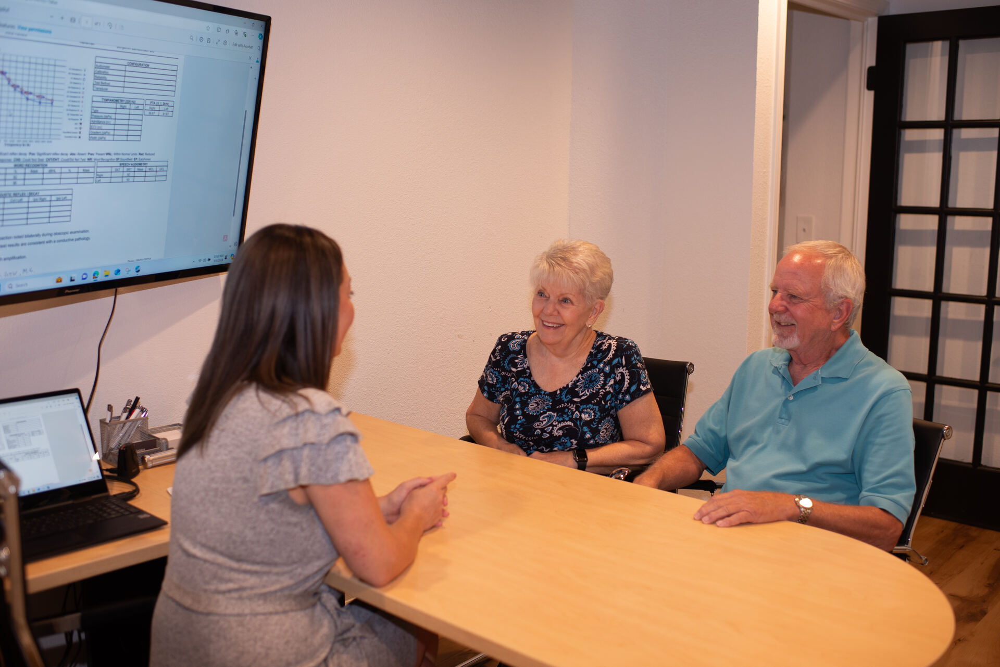
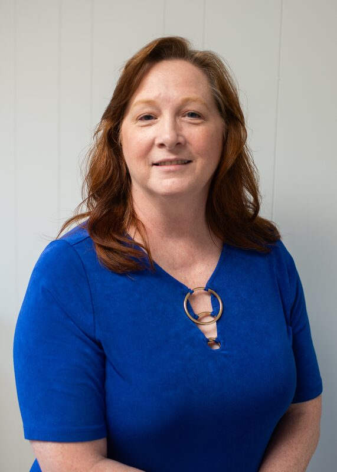
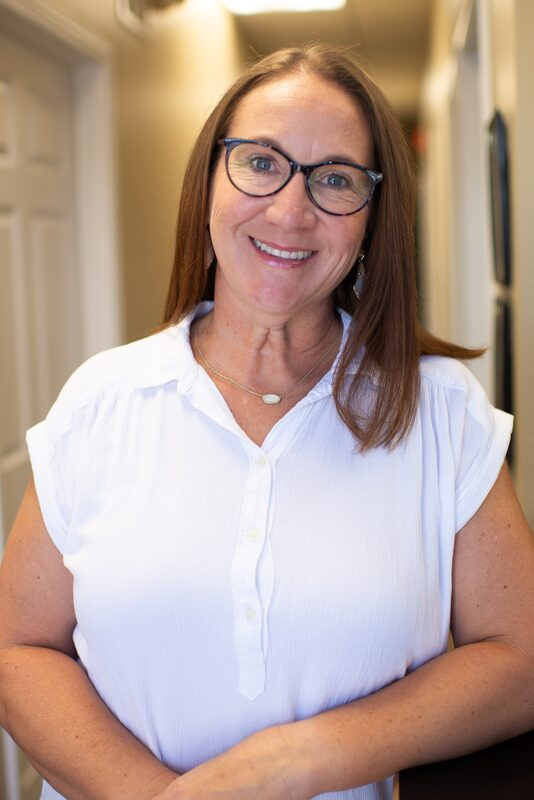

Kathryn Grote, MS
Audiologist · Owner
All locations
Kathy founded KC Hearing Center to bring rigorous, personal hearing care back to her own community.

Comprehensive diagnostic evaluations, expert hearing aid fittings, and lifetime follow-up across six locations in the Kansas City metro and Wichita. Locally owned, patient-first, and committed to clear, personal guidance.
From your first hearing test to long-term care of your devices, our audiologists and licensed specialists walk with you every step.
Thorough, painless testing that maps the full picture of your hearing and shapes the right treatment plan.
Learn morePersonalized, evidence-based care to protect cognition, relationships, and quality of life.
Learn moreFittings you can actually hear the difference in — plus real-ear verification, repairs, and maintenance.
Learn moreTV streamers, remote mics, captioned phones, and apps that extend your hearing beyond the aids themselves.
Learn moreTargeted exercises that strengthen the ear-to-brain connection — because hearing is rebuilt in practice, not just in devices.
Learn moreIn-office moisture removal that verifiably revives devices in minutes — part of our standard of care.
Learn moreCustom protection for hunters, musicians, swimmers, and anyone who needs a perfect, comfortable seal.
Learn moreWe are not a national chain. We are the audiologists and specialists your neighbors already see — and we built this practice around the way patients actually live.
We take the time to explain your audiogram, your options, and exactly what to expect next — so you never feel rushed or sold to.
From real-ear verification to Redux® professional drying and the latest AI-enabled hearing aids, we invest in tools that measurably improve outcomes.
Six locations across Raytown, Belton, Independence, Butler, Higginsville, and Wichita mean your care stays convenient long after your fitting.
Your hearing is personal. So is our team. Every provider at KC Hearing Center practices a patient-centered plan of care.
Kathy founded KC Hearing Center to bring rigorous, personal hearing care back to her own community.

30+ years of clinical practice and a past President of the Kansas City Society of Audiology.
Patient-centered care with a focus on strengthening relationships through better communication.

Approachable, compassionate, and a trusted partner in improving hearing health.
Choose the office closest to you. Raytown is our flagship; every location offers hearing evaluations, fittings, and follow-up.

6528 Raytown Rd, Suite I, Raytown, MO 64133
Mon–Thu 9:00a–4:30p · Fri 9:00a–3:00p
Call (816) 298-9088
8424 Clint Dr, Belton, MO 64012
Mon–Thu 9–12, 1–4 · Fri 8:30–12, 12:30–3
Call (816) 322-8883
17601 E US Hwy 40, Suite L, Independence, MO 64055
Mon–Thu 9:00a–4:30p · Fri 9:00a–3:00p
Call (816) 373-7900Real words from patients across our Kansas City and Wichita locations.
“KC Hearing Center has done a wonderful job in fitting and programming my first hearing aid, and they are very helpful if I have questions with settings, etc. Definitely recommend this place.”
“The staff at KC Hearing Center is friendly and helpful. If you are looking for exceptional knowledge and care, this is the place. Kathy Grote will help you with the best and most economical option for you.”
“Her expertise will guide you through the process with confidence in the decisions you make. Compassionate, knowledgeable, and patient — we are grateful for this team.”
Schedule a complimentary consultation and a 30-day risk-free trial of new hearing aids. We verify your insurance benefits before your visit.